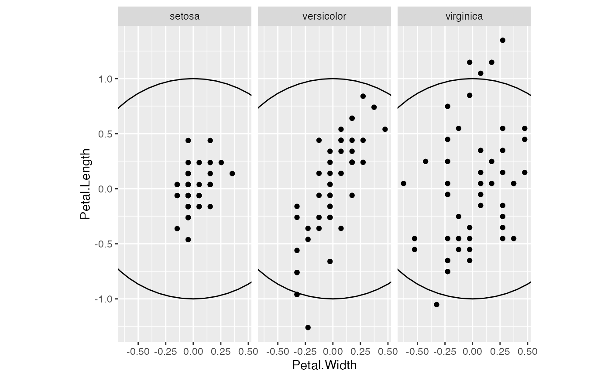
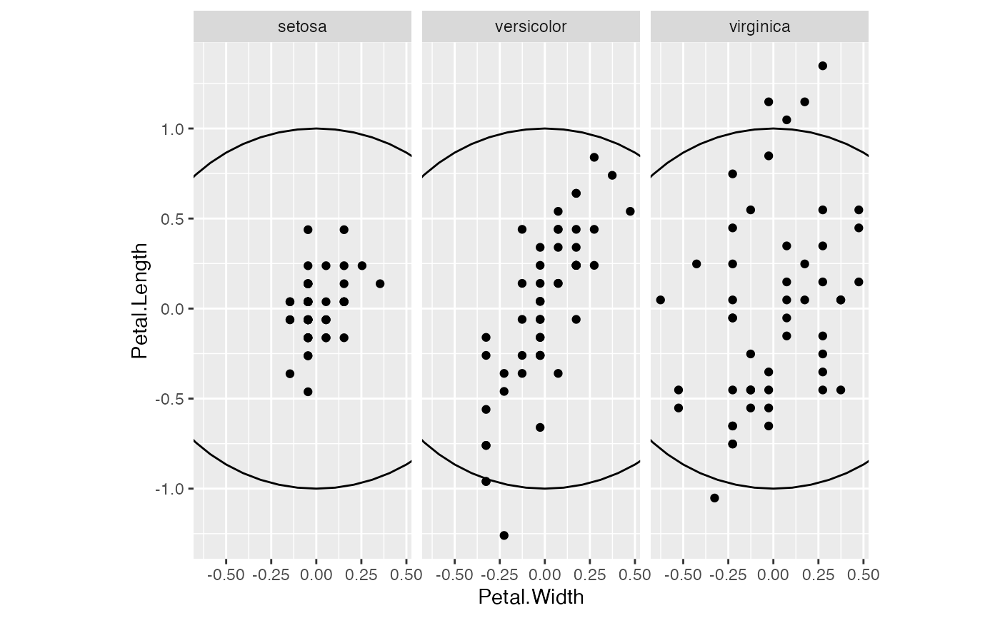

geom_origin() renders a symbol, either a set of crosshairs or
a circle, at the origin. geom_unit_circle() renders the unit circle,
centered at the origin with radius 1.
Usage
geom_origin(
mapping = NULL,
data = NULL,
marker = "crosshairs",
radius = unit(0.04, "snpc"),
...,
na.rm = FALSE,
show.legend = NA,
inherit.aes = FALSE
)
geom_unit_circle(
mapping = NULL,
data = NULL,
segments = 60,
scale.factor = 1,
...,
na.rm = FALSE,
show.legend = NA,
inherit.aes = FALSE
)Arguments
- mapping
Set of aesthetic mappings created by
aes(). If specified andinherit.aes = TRUE(the default), it is combined with the default mapping at the top level of the plot. You must supplymappingif there is no plot mapping.- data
The data to be displayed in this layer. There are three options:
If
NULL, the default, the data is inherited from the plot data as specified in the call toggplot().A
data.frame, or other object, will override the plot data. All objects will be fortified to produce a data frame. Seefortify()for which variables will be created.A
functionwill be called with a single argument, the plot data. The return value must be adata.frame, and will be used as the layer data. Afunctioncan be created from aformula(e.g.~ head(.x, 10)).- marker
The symbol to be drawn at the origin; matched to
"crosshairs"or"circle".- radius
A
grid::unit()object that sets the radius of the crosshairs or of the circle.- ...
Additional arguments passed to
ggplot2::layer().- na.rm
Passed to
ggplot2::layer().- show.legend
logical. Should this layer be included in the legends?
NA, the default, includes if any aesthetics are mapped.FALSEnever includes, andTRUEalways includes. It can also be a named logical vector to finely select the aesthetics to display.- inherit.aes
If
FALSE, overrides the default aesthetics, rather than combining with them. This is most useful for helper functions that define both data and aesthetics and shouldn't inherit behaviour from the default plot specification, e.g.borders().- segments
The number of segments to be used in drawing the circle.
- scale.factor
The circle radius; should remain at its default value 1 or passed the same value as
ggbiplot(). (This is an imperfect fix that may be changed in a future version.)
Value
A ggproto layer.
Biplot layers
ggbiplot() uses ggplot2::fortify() internally to produce a single data
frame with a .matrix column distinguishing the subjects ("rows") and
variables ("cols"). The stat layers stat_rows() and stat_cols() simply
filter the data frame to one of these two.
The geom layers geom_rows_*() and geom_cols_*() call the corresponding
stat in order to render plot elements for the corresponding factor matrix.
geom_dims_*() selects a default matrix based on common practice, e.g.
points for rows and arrows for columns.
Aesthetics
geom_origin() accepts no aesthetics.
geom_unit_circle() understands the following aesthetics (none required):
linetypelinewidthcolouralpha
See also
Other geom layers:
geom_axis(),
geom_bagplot(),
geom_interpolation(),
geom_isoline(),
geom_lineranges(),
geom_rule(),
geom_text_radiate(),
geom_vector()
Examples
ggplot(seals, aes(delta_long, delta_lat)) +
theme_void() +
geom_origin() +
geom_point(alpha = .25)
 # center each group separately
iris |>
split(~ Species) |>
lapply(subset, select = -c(Species)) |>
lapply(scale, center = TRUE, scale = FALSE) |>
lapply(as.data.frame) |>
unsplit(iris$Species) |>
transform(Species = iris$Species) ->
iris_ctr
ggplot(iris_ctr, aes(Petal.Width, Petal.Length)) +
coord_equal() +
facet_wrap(vars(Species)) +
geom_unit_circle() +
geom_point()

# scale group mean differences uniformly
iris_ctr |>
subset(select = -c(Species)) |>
scale(center = FALSE, scale = TRUE) |>
transform(Species = iris$Species) |>
ggplot(aes(Petal.Width, Petal.Length)) +
coord_equal() +
facet_wrap(vars(Species)) +
geom_unit_circle() +
geom_point()
# center each group separately
iris |>
split(~ Species) |>
lapply(subset, select = -c(Species)) |>
lapply(scale, center = TRUE, scale = FALSE) |>
lapply(as.data.frame) |>
unsplit(iris$Species) |>
transform(Species = iris$Species) ->
iris_ctr
ggplot(iris_ctr, aes(Petal.Width, Petal.Length)) +
coord_equal() +
facet_wrap(vars(Species)) +
geom_unit_circle() +
geom_point()

# scale group mean differences uniformly
iris_ctr |>
subset(select = -c(Species)) |>
scale(center = FALSE, scale = TRUE) |>
transform(Species = iris$Species) |>
ggplot(aes(Petal.Width, Petal.Length)) +
coord_equal() +
facet_wrap(vars(Species)) +
geom_unit_circle() +
geom_point()